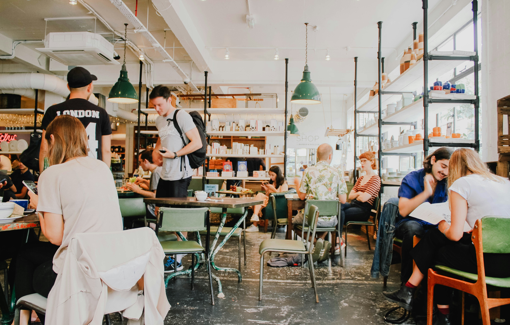

Your first year is busy: new classes, new friends, and long days on campus. It is easy to skip meals or spend your allowance on milk tea. Eating regular, simple meals helps you focus in class, and you do not need a big budget to do it.
Here are some usual go-to spots:
Always bring a refillable water bottle. Water stations on campus are free, and you will save a lot compared to buying bottled drinks every day.

Photo by Toa Heftiba
Home Enrollment